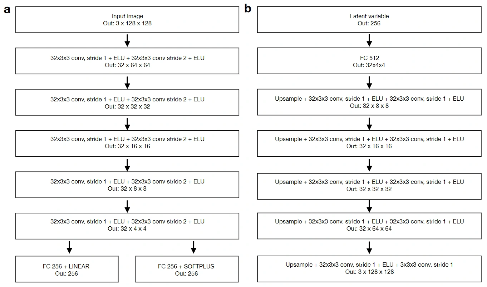
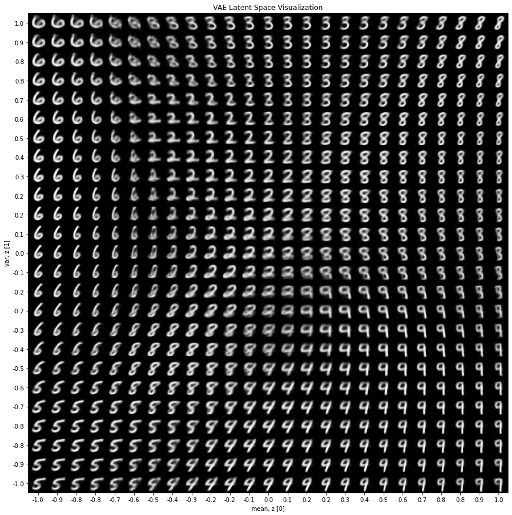
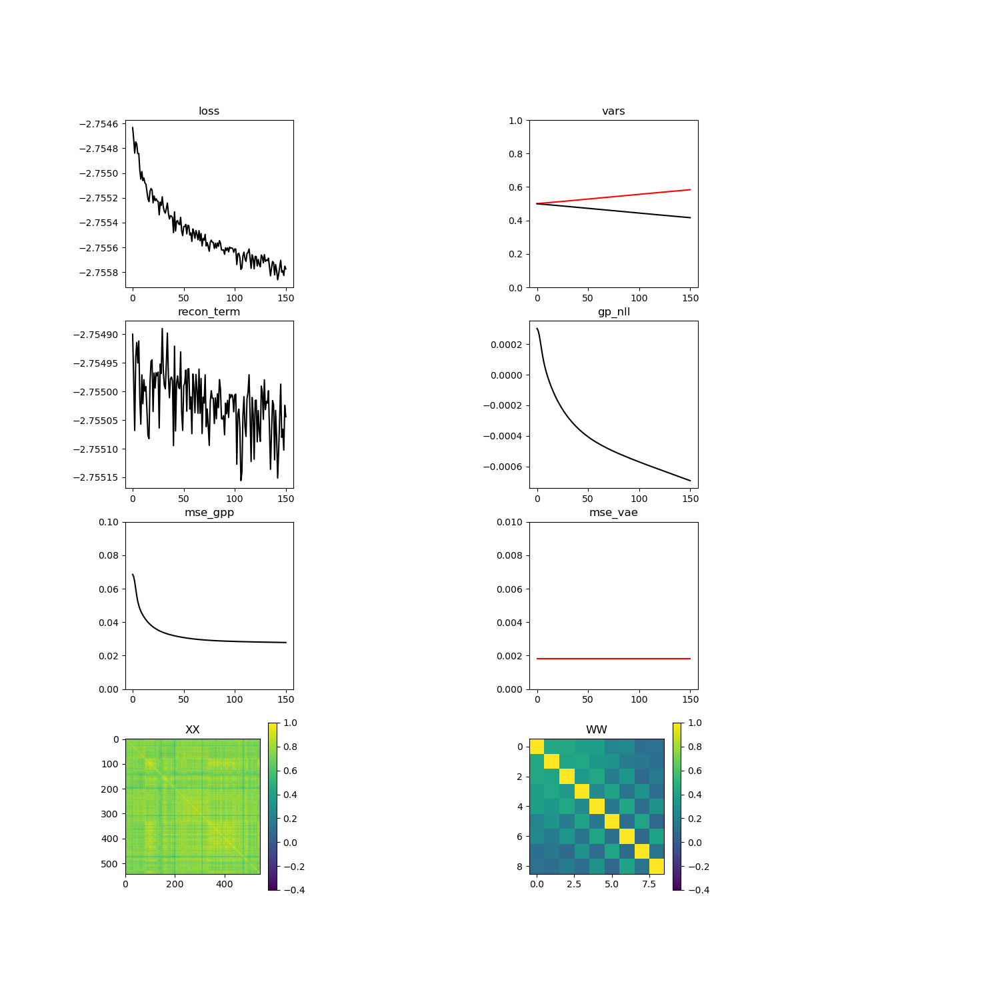

Method at a glance
How it works
- 01EncodePredict a distribution over latent variables from an input image.
- 02Structure the latent spaceUse an independent prior, class conditioning, or correlations supplied by a Gaussian process.
- 03Decode and compareReconstruct images and evaluate generation under changes in the latent variables or viewpoint.
Project workflow schematic.
From reconstruction to controlled generation
The project compared three related generative models and studied what each can control. A standard VAE learns a probabilistic image representation. A CVAE introduces labels to make generation conditional. A GPPVAE adds correlations between related examples, making it possible to reason about the same object under different views. The work combined a group report with retained implementations, checkpoints, training logs, and visualizations.
The final report, Exploring VAEs, was written with Luca Pflittner and Stefan Krieg. It connects the ELBO and reparameterization derivations to practical models, then tests how label conditioning and a structured prior change what can be generated.
Model architecture
The MNIST exploration used a fully connected encoder and decoder, Gaussian mean and log-variance heads, a reparameterized latent sample, and a reconstruction-plus-KL objective. The conditional version concatenates a one-hot digit label with both the input and the latent code.
For FacePlace, the retained convolutional implementation takes 128 × 128 RGB images. Five downsampling blocks, each built from two 3 × 3 convolutions, feed 256-dimensional latent mean and scale heads. The decoder projects the latent vector back into a spatial feature map and uses five upsampling blocks to reconstruct the image. The GPPVAE augments this encoder–decoder with learned identity and viewpoint embeddings and a Gaussian-process prior over the latent representations.


Data and experimental observations
MNIST provides a simple setting for visualizing the learned latent manifold. FacePlace supplies face images with identity and view labels for studying correlations and held-out viewpoints. The GP stage initializes the autoencoder from a pretrained VAE and then learns the structured latent relationships.
We evaluated reconstructions visually and through mean squared error. The course report records a GPPVAE reconstruction error of about 0.029 in the experiment, while explicitly noting that the original paper’s results were not fully reproduced. Its practical strength was novel-view reconstruction of a known identity; the implementation did not establish unrestricted generation of entirely new identities.


Project visuals


Original documents
Project reports, theses and retained presentations in their original language. Presentations are provided as static PDF exports; personal identifiers are removed where necessary.
Related resources
- Gaussian Process Prior Variational Autoencoders
- GPPVAE reference implementationThe face-model experiments build on this implementation.
Reviewed against our 26 July 2024 final report and presentation, together with retained notebooks and training diagnostics. The reported MSE belongs to this reproduction; the report explicitly states that the original paper’s results were not fully reached.